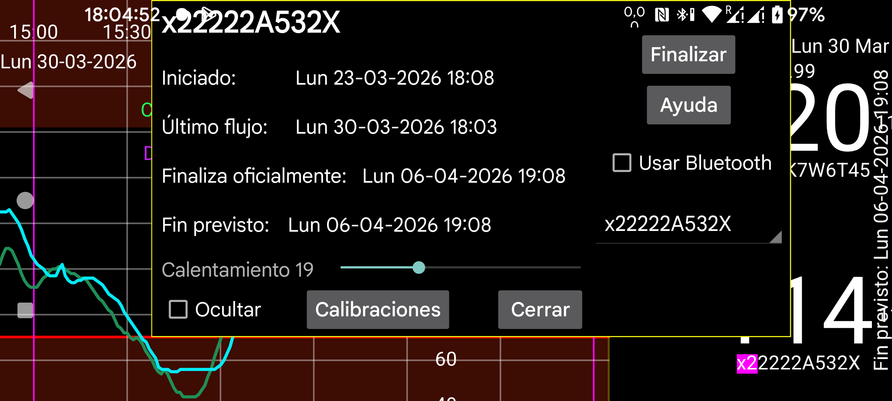

ar de es hi it ja nl pl tr uz en
Esta pantalla muestra información sobre los sensores cuando Juggluco funciona como clon de los valores de Stream.
Iniciado: momento en que se inició el sensor. En los sensores Libre esto ocurre una hora antes de los primeros valores de glucosa.
Último escaneo: última vez que se escaneó el sensor. Incluso si el escaneo no devuelve datos por un error del sensor o por un error de sustitución del sensor, cuenta como escaneado.
Último stream: marca de tiempo de la última medición de glucosa recibida por Stream.
Fin esperado / fin oficial: las horas esperada y oficial de finalización del sensor.
Ocultar: si está activado, esta curva se oculta. Además de desmarcar la casilla, también puedes volver a hacerla visible pulsando Visible en la parte inferior derecha de la pantalla.
Finalizar: deja de recibir valores de glucosa por Bluetooth de este sensor. Si quieres volver a usarlo, tendrás que escanear el sensor de nuevo.
Usar Bluetooth: conecta este dispositivo directamente por Bluetooth con los sensores. Puedes usarlo para cambiar qué dispositivo se conecta directamente a los sensores. Debe desactivarse en el otro dispositivo que antes se conectaba directamente al sensor. También tienes que cambiar la configuración de Clon en ambos dispositivos para que los valores de Stream se envíen en la dirección contraria. Cuando el otro lado es un reloj WearOS, puedes hacerlo todo con una sola pulsación: menú izquierdo → Relojes → Config. WearOS → Conexión directa reloj-sensor.
Cuando uses varios sensores al mismo tiempo, puedes seleccionar de cuál quieres ver la información.
Calibraciones: si has indicado la etiqueta de glucosa en sangre en menú izquierdo → Ajustes → Calibración y has introducido mediciones capilares no excluidas mediante menú central izquierdo → Cantidad, puedes pulsar el botón Calibraciones para ver la lista de calibraciones realizadas. Véase: https://www.juggluco.nl/Juggluco/index.html#calibration
Calentamiento: en sensores Sibionics y Aidex X puedes cambiar el número de minutos del periodo de calentamiento. Durante ese periodo, todas las funciones ignoran los datos: la curva en pantalla, las estadísticas, los datos exportados y los datos visibles en el servidor web. También de forma retroactiva.